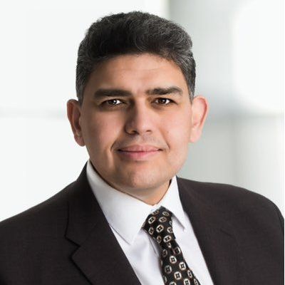
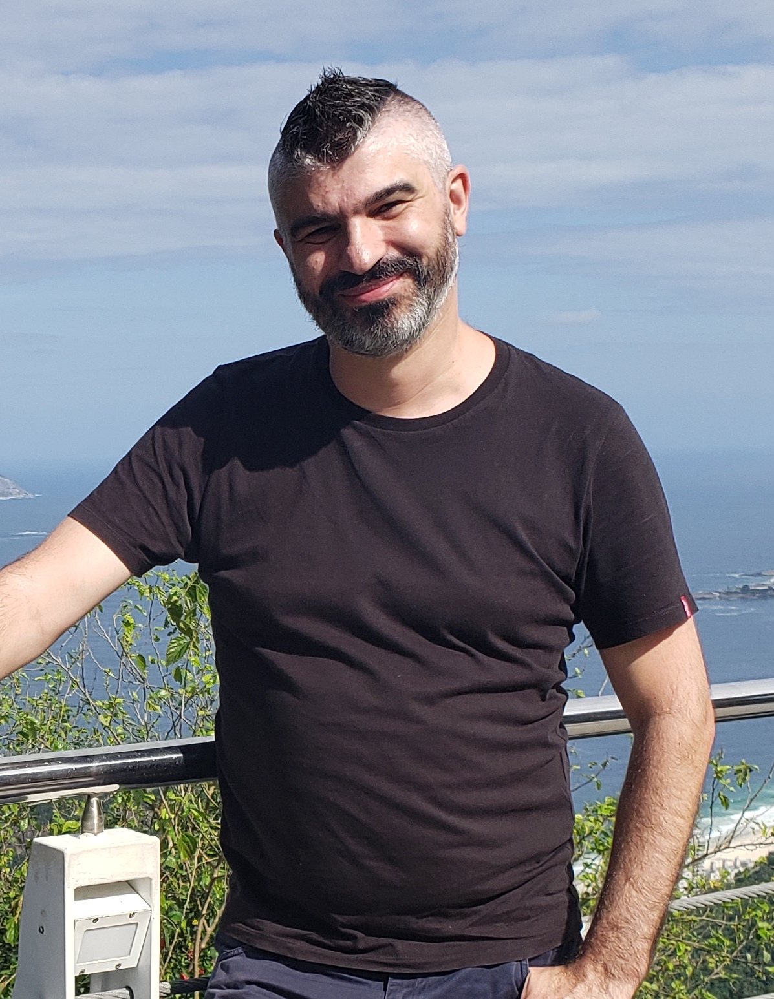

Introduction
Application modernization is the process of upgrading software applications to enhance technology, accommodate evolving dependencies, adopt modern architectures and programming languages, and meet new business requirements. Research estimates suggest that modernization accounts for 80% of software maintenance costs, highlighting the urgent need for automation and AI-driven solutions to reduce manual effort, lower costs, and improve accuracy.
Common modernization efforts include:
- Transforming legacy applications (e.g., Cobol to Java, C++ to Rust)
- Upgrading programming languages and frameworks
- Migrating from on-premises infrastructure to cloud-native architectures
- Refactoring monolithic applications into microservices
While modernization is essential, it presents significant challenges, such as preserving application semantics, estimating transformation effort, and ensuring correctness after refactoring. This workshop focuses on the role of AI in software modernization. Submissions that advance traditional techniques for software modernization are also welcome.
Keynote Talks

The Agentic Software Engineering Revolution
Speaker: Ahmed E. Hassan, Queen’s University, Canada
Abstract: The fundamentals of software and software engineering are undergoing a significant transformation. This talk introduces AIware (AI-Powered Software), and explores the emergence of Agentic Software Engineering. We'll discuss how to move beyond informal “vibe coding” towards “vibe engineering” and ultimately to “Agentic SE” — a more disciplined and powerful framework for creating production-grade software.
This talk will explore a future where the developer's role evolves from simply writing code to becoming an orchestrator, collaborator, and mentor for AI teammates as we move beyond the era of simple "copilots" into one of a more dynamic, collaborative partnership between humans and AI. We will ground this vision in findings from our analysis of AIDev, a large-scale dataset of ~1 Million agent-generated pull requests. We will highlight what real agentic work looks like in the wild, revealing both the impressive potential and the practical challenges that lie ahead.
Join me to discover how we can build systems of greater complexity and scale through conversation, intent, and creative partnership with AI. This is a chance to understand the foundational principles of this emerging field and to prepare for the next revolution in technology.
For those eager to get a preview of the foundational pillars of this new era, you can explore the core concepts in our recent paper: https://arxiv.org/abs/2509.06216
Bio: Ahmed E. Hassan is a Mustafa Prize Laureate, an honor widely equated to a Nobel-level recognition, and a Fellow of ACM, IEEE, and AAIA, as well as an NSERC Steacie Fellow, Canada’s most prestigious mid-career research award across all fields of science and engineering. He holds the Canada Research Chair and the NSERC/BlackBerry Industrial Research Chair in Software Engineering at Queen’s University and is among the world’s most cited Software Engineering researchers. He is the only individual to receive both the ACM SIGSOFT Influential Educator Award (2019) and the IEEE TCSE Distinguished Educator Award (2020), the highest honors for SE educators from the world’s two largest professional societies. As the founder of the AI-Augmented SE, MSR, and AIware communities and a member of the Royal Society of Canada, his career spans over three decades, including leadership roles in both industrial research (IBM Almaden, BlackBerry) and academia.

Benchmarking GenAI for Software Engineering: Challenges and Insights
Speaker: Marco Vieira, University of North Carolina at Charlotte, USA
Abstract: GenAI is rapidly reshaping software engineering, advancing capabilities in code generation, translation, testing, and issue analysis. However, current evaluation practices remain fragmented, inconsistent, and often irreproducible, making it difficult to assess genuine progress. In this talk, we will explore the challenges of systematically and transparently benchmarking GenAI for software engineering. We will present a unified framework that integrates key components (metrics, workloads, prompting strategies, and experimental procedures) to enable rigorous and comparable assessments across diverse tasks. Through practical examples, we will demonstrate how to achieve trustworthy, evidence-based, and reproducible evaluations of Large Language Models (LLMs) for software development.
Bio: Marco Vieira is a Professor in the College of Computing and Informatics at the University of North Carolina at Charlotte. He received his Ph.D. in Informatics Engineering from the University of Coimbra, Portugal. His research interests include dependability and security assessment and benchmarking, fault injection, failure prediction, static analysis, and software testing. Marco has authored or co-authored over 270 papers in refereed journals and international conferences and has led or participated in numerous national and international research projects. He currently serves as chair of IFIP Working Group 10.4 on Dependable Computing and Fault Tolerance, as an Associate Editor of IEEE TDSC, as vice-chair of the IEEE/IFIP DSN steering committee, and as a member of the steering committees for ISSRE, SRDS, and LADC. His current work focuses on leveraging LLMs to support software engineering, including software vulnerability detection, bug report analysis and management, code generation, code translation, test case generation, and trustworthiness assessment.
Important Dates
- Submission deadline: August 18th, 2025
- Notification: September 26th, 2025
- Camera-ready deadline: October 5th, 2025
Call for Papers
We invite high-quality, original research contributions, including but not limited to the following areas:
1. Application Understanding
- AI-driven functionality detection and classification
- Architecture extraction
- Business rule extraction from legacy codebases
- AI-powered question-answering and retrieval-based techniques for understanding application logic
- AI-based code search and summarization
- Defining and evaluating metrics for application understanding and summarization
2. Modernization Design and Effort Estimation
- AI-driven insights on the potential impact of modernization changes, including downtime, compatibility issues, and risk mitigation strategies
- Mapping and rearchitecting legacy applications (e.g., monolith to microservices)
- AI-based recommendation systems for modernization planning and estimation of modernization complexity, cost, and effort
3. Application Transformation
- Automated extraction, modularization, and migration of application functionality, database systems
- AI-generated transformation and refactoring rules
- Fine-tuning AI models for transformation-aware code generation
- AI-driven automated UI modernization
- Large-scale, multi-language migration frameworks
- Agentic approach to feedback-driven transformation
- AI-driven automated refactoring
4. Testing, Debugging, and Repair
- Ensuring semantic preservation in automated transformations
- AI-based testing strategies for modernized applications
- Coverage metrics for program transformation correctness
- Automated generation of functional test suites
- AI-driven defect detection and iterative repair of transformed code
- Defining and evaluating metrics for transformation quality
5. Case Studies and Applications
- Real-world applications of AI in modernization
- Development and adoption of AI-driven modernization frameworks and tools
- Empirical studies and lessons learned in large-scale migration projects
Evaluation Criteria
- Novelty: Originality and technical contribution of the work
- Relevance: Alignment with the workshop’s themes and topics
- Technical Rigor: Soundness, correctness, and quality of the methodology
- Practical Impact: Applicability of the proposed techniques in real-world scenarios
- Clarity: Well-structured presentation, clear articulation of contributions, and readability
Submission Guidelines
- Paper Length: Submissions should belong to:
- Full papers: 8 pages (including references), presenting mature research or industry experience papers.
- Short papers: 4 pages (including references), presenting new ideas or early-stage work.
- Format: Papers must follow the research track formatting guidelines
- Submission Portal CMT (Submission is enabled now!)
- Review Process: Single-blind peer review
Proceedings
All accepted papers will be included in the ASE 2025's conference proceedings. The proceedings will be made available online and indexed in the ACM/IEEE Digital Library.
Organizers
- Diptikalyan Saha, diptsaha@in.ibm.com, Senior Technical Staff Member, IBM Research India
- Srikanth Tamilselvam, srikanth.tamilselvam@in.ibm.com, Senior Technical Staff Member, IBM Research India
- Shivali Agarwal, shivaaga@in.ibm.com, Senior Technical Staff Member, IBM Research India
- Sridhar Chimalakonda, ch@iittp.ac.in, Associate Professor & Head of the Department, IIT Tirupati
Committee
- Aseem Rastogi, Microsoft Research
- Chanchal Roy, University of Saskatchewan
- Eitan Farchi, IBM Research, Haifa
- Fumiko Satoh, IBM Research, Tokyo
- Mei Nagappan, University of Waterloo
- Paddy Krishnan, Oracle, Australia
- Raviv Gal, IBM Research, Haifa
- Raveendra Medicherla, TCS Research, India
- Ravindra (RD) Naik, Ex-TCS Research, India
- Saurabh Sinha, IBM Research, USA
- Sujit Kumar Chakrabarti, International Institute of Information Technology, Bangalore, India
- Naveen Kolli, USA
- Vivek Banerjee, International Paper, USA
Accepted Papers
-
Grammar- and Coverage-based Augmentation of Programs for Training LLMs
Shin Saito (IBM Research); Takaaki Tateishi (IBM Research); Yasuharu Katsuno (IBM Research) -
Uncovering Code Insights: Leveraging GitHub Artifacts for Deeper Code Understanding
Ziv Nevo (IBM Research); Orna Raz (IBM Research); Karen Yorav (IBM Research) -
Leveraging LLM for software modernization: COBOL Functionality Extraction Case study
Asha Rajbhoj (Tata Consultancy Services); Akanksha Somase (Tata Consultancy Services); Tanay Sant (Tata Consultancy Services); Ajim Pathan (Tata Consultancy Services); Purvesh Doud (Tata Consultancy Services); Vinay Kulkarni (Tata Consultancy Services) -
Microservices Identification Using LLM
Jay Gandhi (TCS Research, Tata Consultancy Services); Raveendra Kumar Medicherla (TCS Research, Tata Consultancy Services); Manasi Patwardhan (TCS Research, Tata Consultancy Services); Dipesh Sharma (AMD India); Ravindra Naik (COEP Tech, Pune) -
Multilingual Code Explanation for Mainframe Languages
Kaoru Shinkawa (IBM Research); Ai Ishida (IBM Research); Yasuharu Katsuno (IBM Research); Fumiko Satoh (IBM Research) -
Vintage Code, Modern Judges: Meta-Validation in Low Data Regimes
Ora Fandina (IBM Research); Gal Amram (IBM Research); Eitan Farchi (IBM Research); Shmulik Froimovich (IBM Research); Raviv Gal (IBM Research); Wesam Ibraheem (IBM Research); Rami Katan (IBM Research); Alice Podolsky (IBM Research); Orna Raz (IBM Research) -
LLM Agents for Automated Dependency Upgrades
Vali Tawosi (JP Morgan); Salwa Alamir (JP Morgan); Xiaomo Liu (JP Morgan); Manuela Veloso (JP Morgan)
Program
Updated here